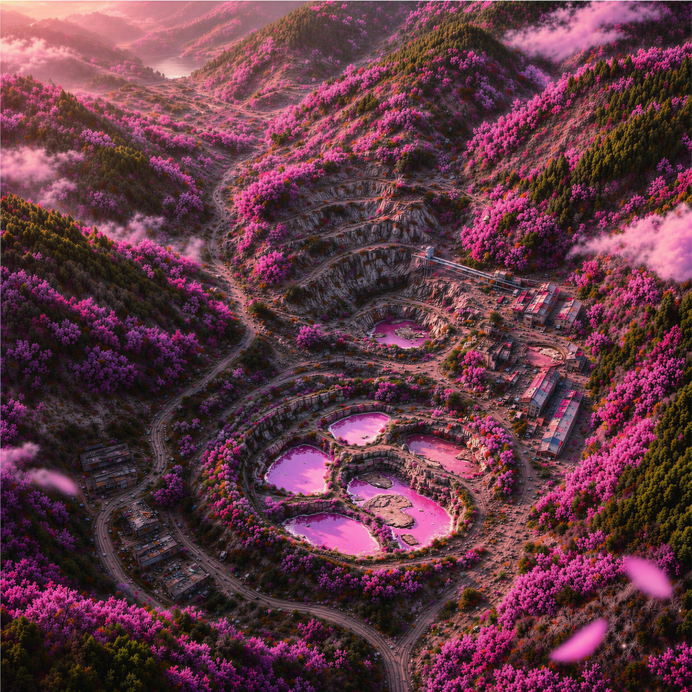
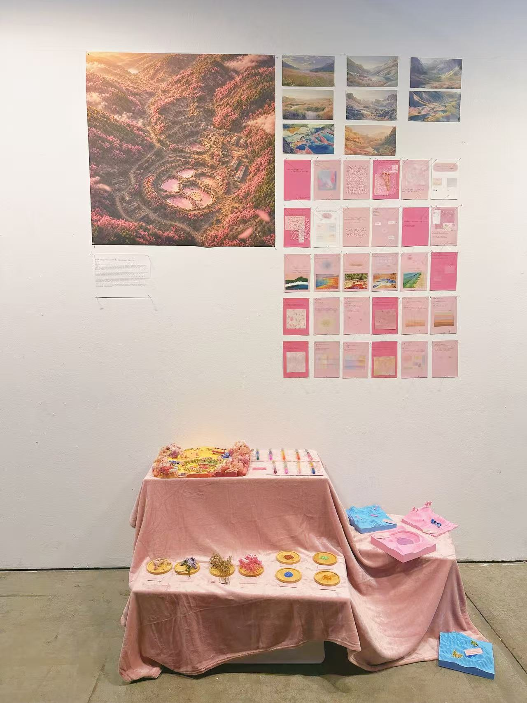
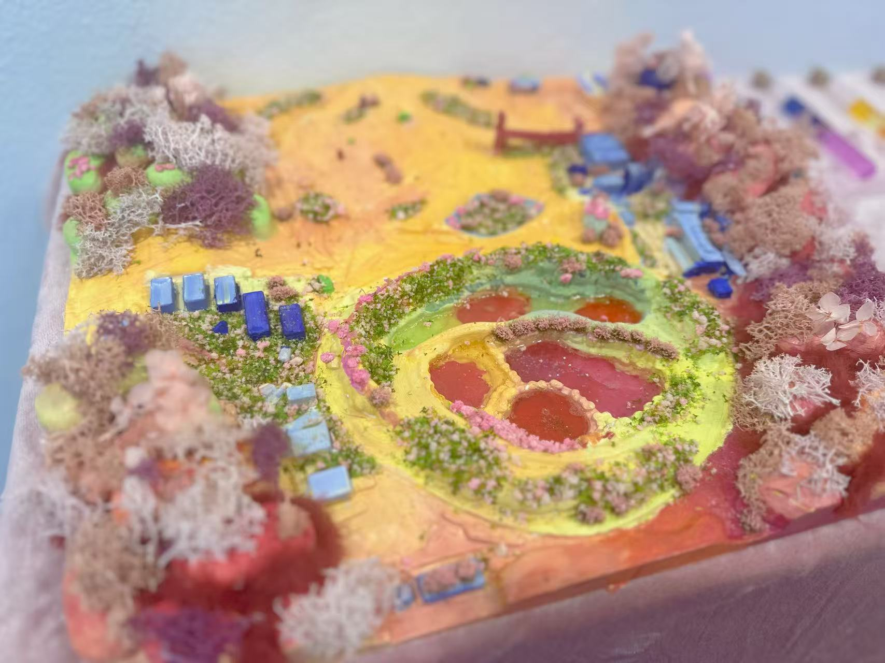
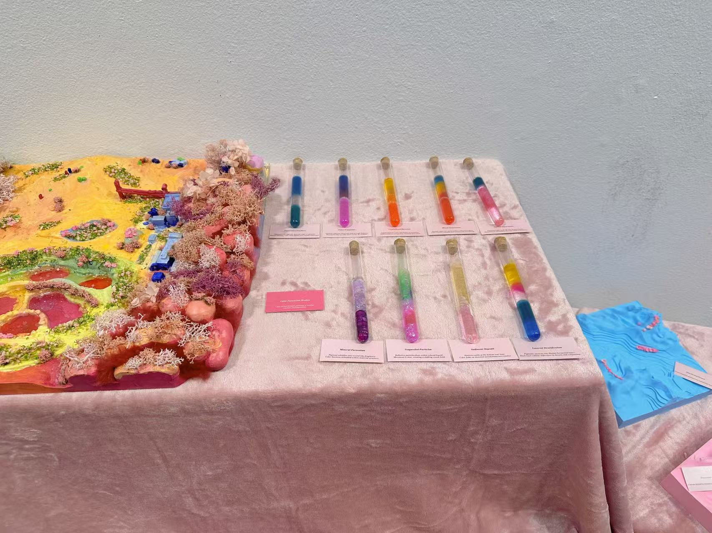
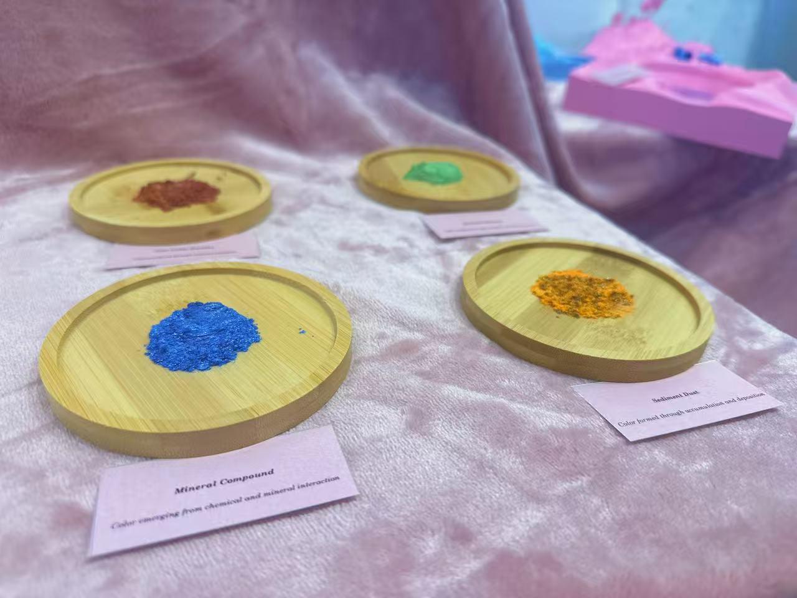
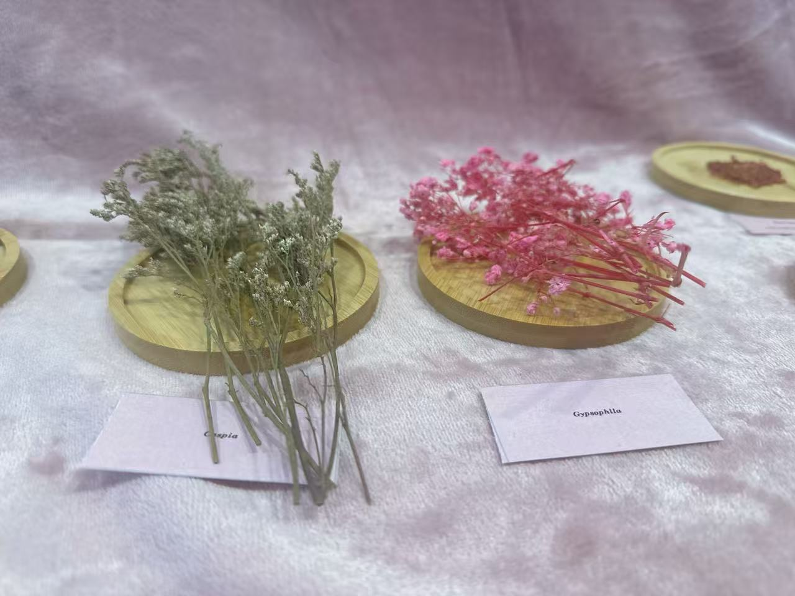

From Imagined Color
to Landscape Reality
Project Overview
From Imagined Color to Landscape Reality explores the possibility of translating imagined, dreamlike colors into real landscape conditions. Inspired by the surreal aesthetics of digitally generated environments, the project begins with a simple observation: many colors that appear artificial or fictional already exist in nature and industry, not as surface decoration, but as the result of specific material, chemical, and ecological processes.
Rather than treating color as a visual attribute applied to form, the project understands color as something produced. It emerges from conditions such as mineral oxidation, microbial activity, biological growth, and industrial intervention. Pink lakes, red soils, and luminous green waters are not anomalies, but evidence of underlying systems at work.
Through visual research, material experiments, speculative landscapes, and exhibition installation, the project investigates how imagined color can become real—not by imitation, but by recreating the conditions that generate it. By shifting the role of color from appearance to process, landscape is reframed as an active field of production, where the seemingly fantastical is already latent, waiting to be activated through design.

Exhibition View
The project was presented as an exhibition installation, bringing together visual research, spatial arrangement, printed materials, and physical display. The installation frames color as both an aesthetic experience and a material condition, allowing the research to move beyond images and into a more spatial form of viewing.





Research Document
Research Document
A research document containing the theoretical framework, case studies, and visual thinking behind the project.
Visual Companion
A visual companion video extending the atmosphere of the project.
This video works as an atmospheric extension of the research, translating the project's interest in imagined color, surreal landscape, and environmental transformation into a moving visual sequence.
Reflection
This project reframes color as an environmental process rather than a surface effect. Through research, image-making, and exhibition installation, it asks how landscapes might be designed by activating the material conditions that already produce seemingly impossible colors.